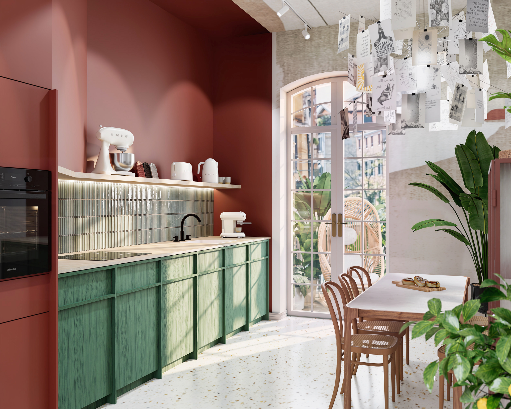
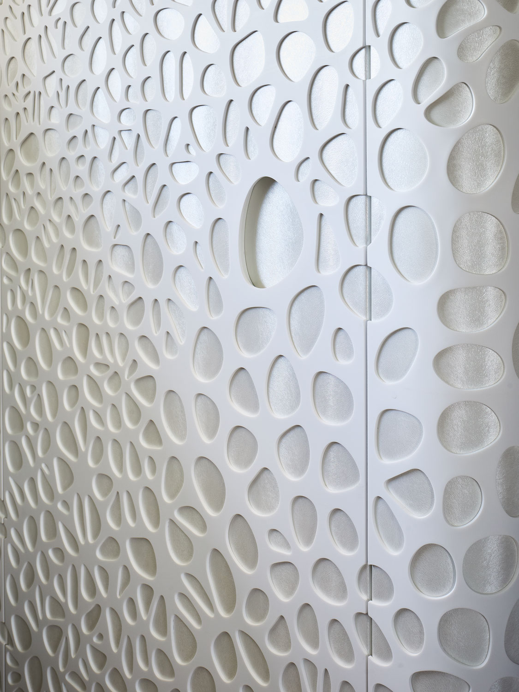

Kitchen
2026 – Entwurf & 3D

2026 – Entwurf & 3D

2026 – Entwurf & 3D

2026 – Entwurf & 3D

2022 – Entwurf bis Fertigstellung

2020 – Grafiken, Fräsungen und 3D

2026 – Konzept, Webdesign & Umsetzung

2025 – Entwurf & 3D
2025 – 3D & Animation
2025 – 3D & Animation

2023 – Entwurf & Ausführungsplanung

2025 – Entwurf & 3D

2025 – Entwurf & 3D

2021 – Entwurf & 3D

2025 – Entwurf & 3D

2025 – Entwurf & 3D

2017 – Masterarbeit